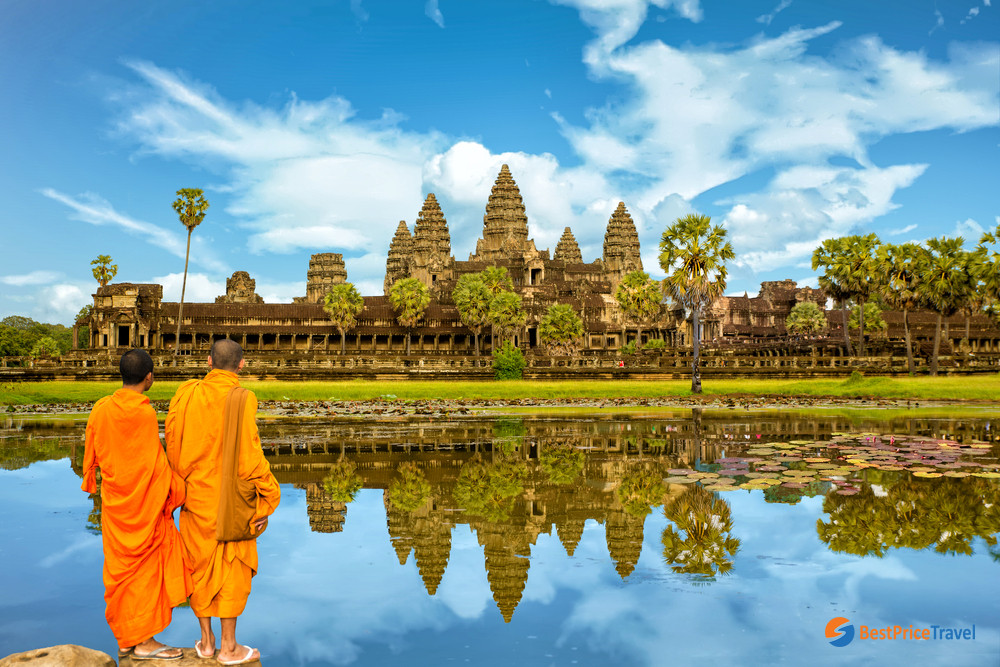

Khí hậu Campuchia cũng giống như khí hậu các nước Đông Nam Á khác, bị chi phối bởi gió mùa. Khí hậu khô và ẩm ướt rõ rệt theo mùa. Nhiệt độ dao động trong khoảng 21°C - 35°C. Campuchia có các mùa mưa nhiệt đới: gió tây nam từ Vịnh Thái Lan/Ấn Độ Dương đi vào đất liền theo hướng đông bắc mang theo hơi ẩm tạo thành những cơn mưa từ tháng 5 đến tháng 10, trong đó lượng mưa lớn nhất vào khoảng tháng 9, tháng 10; gió đông bắc thổi theo hướng tây nam về phía biển trong mùa khô từ tháng 11 đến tháng 3, với thời kỳ ít mưa nhất là tháng 1, tháng 2. Theo Trung tâm Nghiên cứu Phát triển Quốc tế và Liên hợp quốc, Campuchia được xem là quốc gia dễ bị tổn thương nhất của Đông Nam Á trước ảnh hưởng của biến đổi khí hậu, cùng với Phillippines. Dân số nông thôn ven biển đặc biệt có nguy cơ cao hơn. Theo Hiệp hội Cải cách Khí hậu Cămpuchia, tình trạng thiếu nước sạch, lũ lụt cực đoan, lở đất, mực nước biển dâng cao và các trận bão có khả năng phá hoại là mối quan tâm đặc biệt.
Vương quốc Campuchia là một trong những địa điểm du lịch mới và hẫp dẫn nhất trên thế giới. Sau hơn 25 năm cô lập, Campuchia mở cửa đón khách du lịch vào những năm đầu của thập niên 90 và lượng khách du lịch tăng lên qua từng năm
Những điểm du lịch hấp dẫn nhất của Vương quốc Campuchia là đền Angkor Wat và những ngôi đền thuộc quần thể Angkor thuộc tỉnh Siem Reap, cũng như các địa điểm văn hoá hẫp dẫn thuộc thủ đô Phnom Penh và những bãi biển thuộc tỉnh Sihanoukville với đầy đủ các dịch vụ cần thiết như khách sạn, nhà hàng, điểm vui chơi giải trí và một số dịch vụ du lịch khác.
Campuchia là vùng đất của những cái đẹp, các ngôi đền cổ kính thuộc quần thể Angkor, đền Bayon và sự sụp đổ của đế chế Khmer luôn mang dấu ấn của sự trang trọng, hùng vĩ và chiếm vị trí trung tâm trong các kỳ quan thế giới – có thể so sánh với Machu Picchu, Kim tự tháp Ai Cập hay Vạn lý trường thành. Nhưng sự hùng vĩ này lại trái ngược với Cánh đồng chết và bảo tàng diệt chủng Toul Sleng, cũng như trái ngược với những chứng tích lịch sử cận đại của Campuchia, thời gian mà lực lượng Polpot và chế độ cực đoan Khmer Đỏ cai trị cuối những năm 1970, gây nên một trong những tội ác ghê rợn và tàn bạo nhất của thế kỷ XX.